Тема, мета, місце розташування (ЛР №1)
Тема Теги та атрибути HTML-документа. Структурна розмітка. Git. GitHub. Робота з репозиторіями. Опис логіки власного WEB-застосунку.
Мета Придбати практичні навички роботи з GitHub, репозиторіями, HTML-документом, таблицями, зображеннями, посиланнями, списками, формами. Створити шаблон звітного HTML-документа для відображення результатів усіх лабораторних робіт.
Місце розташування
Опис предметного середовища. Опис бізнес-логіки
Опис предметного середовища
Предметна галузь — бібліотечна справа. BookNest — онлайн-бібліотека, де читачі шукають книги в каталозі, бронюють їх і читають онлайн, а бібліотекар керує каталогом і видачею.
Пошук книг у каталозі.
Реєстрація читачів.
Бронювання і повернення книг.
Керування каталогом (бібліотекар).
Бізнес-логіка
Читач переглядає каталог.
Реєструється або входить.
Знаходить і бронює книгу.
Бібліотекар підтверджує видачу на 14 днів.
Після повернення книга знову доступна.
Вимоги
Тип Вимога Функціональна Пошук і бронювання книг Функціональна Облік видач і повернень Нефункціональна Завантаження сторінки до 3 с Нефункціональна Адаптивний інтерфейс
Структура документа
HTML-документ складається з оголошення типу <!DOCTYPE html> та кореневого елемента <html>, який містить дві частини: <head> (службова інформація: кодування, заголовок вкладки, підключення стилів) і <body> (видимий вміст сторінки).
<!DOCTYPE html>
<html lang="uk">
<head>
<meta charset="UTF-8">
<title>Заголовок</title>
<link rel="stylesheet" href="style.css">
</head>
<body>
<header>…</header>
<main>…</main>
<footer>…</footer>
</body>
</html>Тег — службове слово в кутових дужках, яке вказує браузеру, як відобразити вміст (парні <p>…</p> і непарні <img>). Атрибут — додаткова властивість тега у форматі назва="значення".
HTML-код таблиці <section id="catalog">
<h2>Популярні книги</h2>
<table>
<tr><th>Обкладинка</th><th>Назва</th><th>Автор</th><th>Наявність</th></tr>
<tr><td><img src="images/book1.svg" alt="Кобзар" width="50"></td><td>Кобзар</td><td>Тарас Шевченко</td><td>Є</td></tr>
<tr><td><img src="images/book2.svg" alt="Чистий код" width="50"></td><td>Чистий код</td><td>Роберт Мартін</td><td>Є</td></tr>
<tr><td><img src="images/book3.svg" alt="HTML і CSS" width="50"></td><td>HTML і CSS</td><td>Джон Дакетт</td><td>Видана</td></tr>
</table>
</section>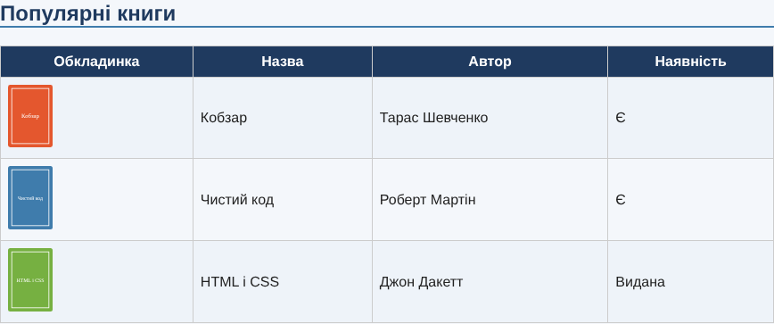
Скріншот таблиці Теорія
<table> — контейнер таблиці; <caption> — заголовок таблиці;<thead>, <tbody>, <tfoot> — шапка, тіло, підвал;<tr> — рядок; <th> — клітинка-заголовок; <td> — звичайна клітинка;атрибути: colspan — об'єднання стовпців, rowspan — об'єднання рядків, border, width, align, scope (останні візуальні краще задавати в CSS). HTML-код зображення <img src="images/hero.svg" alt="Полиця з книгами BookNest" width="900" height="320">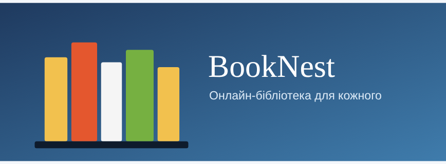
Скріншот зображення Теорія Тег <img> непарний. Атрибути: src — шлях до файлу (обов'язковий); alt — альтернативний текст (доступність, показується при помилці завантаження); width, height — розміри; title — підказка; loading="lazy" — відкладене завантаження. Для підпису використовують <figure> та <figcaption>. Формати: JPEG, PNG, GIF, SVG, WebP.
HTML-код списків <section id="rules">
<h2>Як взяти книгу</h2>
<ol>
<li>Зареєструйтесь.</li>
<li>Знайдіть книгу в каталозі.</li>
<li>Забронюйте її.</li>
</ol>
<h3>Категорії</h3>
<ul>
<li>Художня література
<ul>
<li>Класика
<ul><li>Українська</li><li>Зарубіжна</li></ul>
</li>
</ul>
</li>
<li>IT</li>
</ul>
</section>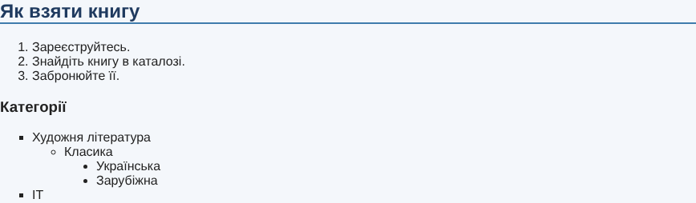
Скріншот списків Теорія
<ul> — маркований список; <ol> — нумерований; <li> — елемент списку;атрибути <ol>: type (1, A, a, I, i), start, reversed; атрибут value для <li>;
<dl>, <dt>, <dd> — список визначень;вкладені списки утворюють багаторівневу структуру. HTML-код форми <section id="register">
<h2>Реєстрація читача</h2>
<form action="#" method="post">
<label>Ім'я: <input type="text" name="name" required></label>
<label>Email: <input type="email" name="email" required></label>
<label><input type="checkbox" name="news"> Отримувати новини</label>
<button type="submit" class="btn">Зареєструватися</button>
</form>
</section>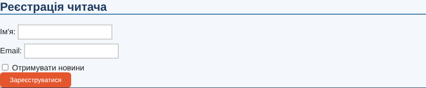
Скріншот форми <form> (атрибути action, method), <input> (type: text, email, radio, checkbox…; name, placeholder, required), <label for>, <select>/<option>, <fieldset>/<legend>, <button>.
Головна сторінка WEB-застосунку 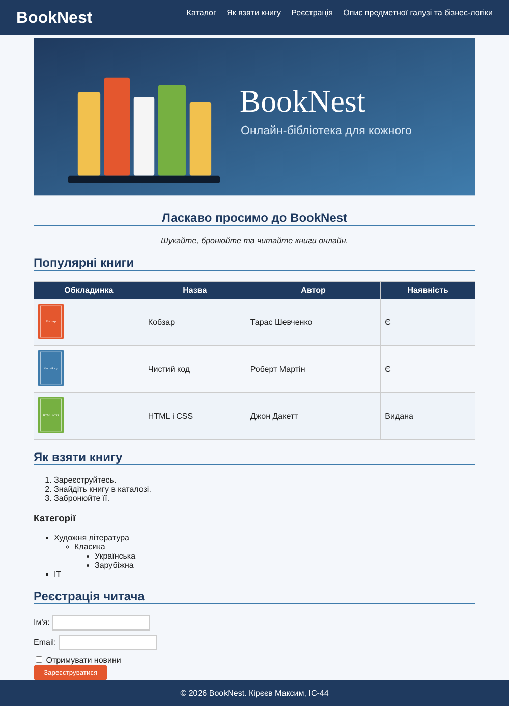
Головна сторінка BookNest Жива сторінка: https://d1ff1337.github.io/IC-44_appWEB-KirieievMaksym-FIOT-2026/
Код головної сторінки WEB-застосунку <!DOCTYPE html>
<html lang="uk">
<head>
<meta charset="UTF-8">
<meta name="viewport" content="width=device-width, initial-scale=1.0">
<title>BookNest</title>
<link rel="stylesheet" href="style.css">
</head>
<body>
<header id="main-header">
<h1>BookNest</h1>
<nav>
<a href="#catalog">Каталог</a>
<a href="#rules">Як взяти книгу</a>
<a href="#register">Реєстрація</a>
<a href="about.html">Опис предметної галузі та бізнес-логіки</a>
</nav>
</header>
<main>
<section id="hero">
<img src="images/hero.svg" alt="Полиця з книгами BookNest" width="900" height="320">
<h2>Ласкаво просимо до BookNest</h2>
<p>Шукайте, бронюйте та читайте книги онлайн.</p>
</section>
<section id="catalog">
<h2>Популярні книги</h2>
<table>
<tr><th>Обкладинка</th><th>Назва</th><th>Автор</th><th>Наявність</th></tr>
<tr><td><img src="images/book1.svg" alt="Кобзар" width="50"></td><td>Кобзар</td><td>Тарас Шевченко</td><td>Є</td></tr>
<tr><td><img src="images/book2.svg" alt="Чистий код" width="50"></td><td>Чистий код</td><td>Роберт Мартін</td><td>Є</td></tr>
<tr><td><img src="images/book3.svg" alt="HTML і CSS" width="50"></td><td>HTML і CSS</td><td>Джон Дакетт</td><td>Видана</td></tr>
</table>
</section>
<section id="rules">
<h2>Як взяти книгу</h2>
<ol>
<li>Зареєструйтесь.</li>
<li>Знайдіть книгу в каталозі.</li>
<li>Забронюйте її.</li>
</ol>
<h3>Категорії</h3>
<ul>
<li>Художня література
<ul>
<li>Класика
<ul><li>Українська</li><li>Зарубіжна</li></ul>
</li>
</ul>
</li>
<li>IT</li>
</ul>
</section>
<section id="register">
<h2>Реєстрація читача</h2>
<form action="#" method="post">
<label>Ім'я: <input type="text" name="name" required></label>
<label>Email: <input type="email" name="email" required></label>
<label><input type="checkbox" name="news"> Отримувати новини</label>
<button type="submit" class="btn">Зареєструватися</button>
</form>
</section>
</main>
<footer>© 2026 BookNest. Кірєєв Максим, ІС-44</footer>
</body>
</html>
Висновки до ЛР №1 Під час роботи я створив репозиторії на GitHub, склонував їх та працював у Visual Studio Code. Описав предметну галузь (онлайн-бібліотека BookNest) та її бізнес-логіку, виконав макет у Figma. Створив головну сторінку веб-застосунку із заголовками різних рівнів, таблицею, зображеннями, нумерованими й маркованими списками, формою та посиланням на сторінку з описом. Ознайомився зі структурою HTML-документа, тегами та атрибутами, а також із публікацією сайту через GitHub Pages.
Контрольні питання
Структура HTML-документа: DOCTYPE, html, head, body.Тег — інструкція браузеру в кутових дужках, що визначає тип і відображення елемента.Таблиці: table, caption, thead, tbody, tfoot, tr, th, td, colgroup, col.Зображення: img, figure, figcaption, picture, source.Списки: ul, ol, li, dl, dt, dd.Засоби опису таблиць: теги table/tr/td/th, атрибути colspan, rowspan, border, а також стилі CSS (border-collapse, padding тощо). Тема, мета ЛР №2. Місце розташування
Тема Каскадні таблиці стилів. Селектори тегу, класу, ідентифікатора. Стильове оформлення текстових елементів в HTML-документах.
Мета Придбати практичні навички роботи з селекторами, ідентифікаторами, списками, властивостями кольору і фону, зовнішніми та внутрішніми відступами, плаваючими елементами, оформленням текстових елементів.
WEB-застосунок: https://d1ff1337.github.io/IC-44_appWEB-KirieievMaksym-FIOT-2026/ https://d1ff1337.github.io/IC-44_appRECORD-KirieievMaksym-FIOT-2026/
Способи підключення стилів
Вбудований (inline) — атрибут style:<p style="color:red">Текст</p>Внутрішній — тег style в head:<style>
p { color: red; }
</style>Зовнішній — окремий файл (використано в проєкті):<link rel="stylesheet" href="style.css">Імпорт : @import url("style.css");Каскадування — вирішення конфліктів правил за пріоритетом (inline > id > class > тег, а за рівної специфічності — останнє правило). Спадкування — передача деяких властивостей (color, font) від батьківського елемента нащадкам.
Селектори тегу body { margin: 0; font-family: Arial, sans-serif; color: #222; background: #f4f7fb; }
h1 { margin: 0; color: #fff; }
h2 { color: #1f3a5f; border-bottom: 2px solid #3f7cac; }
a { color: #3f7cac; }
img { max-width: 100%; }<h2>Популярні книги</h2>Результат у браузері Селектори класів .btn { padding: 8px 20px; color: #fff; background: #e4572e; border: 0; border-radius: 6px; }
.btn:hover { background: #c4421d; }<button type="submit" class="btn">Зареєструватися</button>Результат у браузері Селектори ідентифікаторів #main-header { display: flex; justify-content: space-between; padding: 16px 32px; background: #1f3a5f; }
#hero { text-align: center; }<header id="main-header">…</header>
<section id="hero">…</section>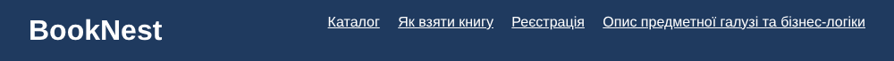
Результат у браузері Інші селектори * { box-sizing: border-box; }
nav > a { margin-left: 16px; color: #fff; }
h2 + p { font-style: italic; }
tr:nth-child(even) { background: #eef3f9; }
input[type="text"], input[type="email"] { padding: 6px; border: 2px solid #ccc; }Дочірній nav > a, сусідній h2 + p, атрибута input[type="text"], універсальний *.
Результат у браузері CSS: Шрифти Текст Таблиці Фон Контур Списки CSS Просунутий
Шрифти, текст, колір body { margin: 0; font-family: Arial, sans-serif; color: #222; background: #f4f7fb; }
h2 { color: #1f3a5f; border-bottom: 2px solid #3f7cac; }
h2 + p { font-style: italic; }Таблиці table { width: 100%; border-collapse: collapse; }
th, td { padding: 8px; border: 1px solid #ccc; }
th { color: #fff; background: #1f3a5f; }
tr:nth-child(even) { background: #eef3f9; }Таблиця Списки ul { list-style-type: square; }
ul ul { list-style-type: circle; }
ul ul ul { list-style-type: disc; }Списки Фон і контур #main-header { display: flex; justify-content: space-between; padding: 16px 32px; background: #1f3a5f; }
.btn { padding: 8px 20px; color: #fff; background: #e4572e; border: 0; border-radius: 6px; }
input[type="text"], input[type="email"] { padding: 6px; border: 2px solid #ccc; }CSS Просунутий .btn:hover { background: #c4421d; }
tr:nth-child(even) { background: #eef3f9; }
@media (max-width: 600px) { #main-header { flex-direction: column; } }Резюме Стильове оформлення резюме виконано в окремій сторінці resume.html .
Висновки до ЛР №2 Я навчився підключати стилі різними способами та застосовувати селектори тегу, класу, ідентифікатора, а також дочірні, сусідні, атрибутні й універсальний селектори. Оформив текст, шрифти, фон, контури, таблиці та багаторівневі списки, застосував псевдокласи, переходи та медіазапити. Створив стильове оформлення резюме та звітного HTML-документа за макетом.
Контрольні питання
CSS відокремлює оформлення від вмісту й дозволяє задавати зовнішній вигляд багатьом сторінкам з одного файлу.
Методи: inline, внутрішній (style), зовнішній (link), @import.
Каскадування — розв'язання конфліктів правил за пріоритетом і порядком; спадкування — передача значень властивостей від батька до нащадків.
Селектор тегу: p {}; класу: .name {} з атрибутом class="name".
Ідентифікатор (#id) однозначно позначає єдиний елемент для стилізації, якорів та скриптів.
Приклади: font-family, font-size, color, text-align, text-decoration, line-height. Тема, мета ЛР №3. Місце розташування сайту, звіту
Тема Верстка HTML-документу. Блокова верстка. Верстка засобами CSS та FLEXBOX. Адаптивна верстка. Медіа-запити. Метатег viewport.
Мета придбати практичні навички верстки сторінок засобами CSS, верстки на основі плаваючих елементів, з'ясувати переваги та недоліки типів макетів веб-сторінок; придбати практичні навички верстки сторінок засобами CSS та FLEXBOX. Місце розташування
Сторінки завдань (живі)
Варіанти: Завдання №2 — таблична верстка: варіант 7, блокова верстка: варіант 8 (7+1); Завдання №3 — варіант 7.
Завдання №1. Зовнішній вигляд макету. Код макету
Макет сайту BookNest вдосконалено: додано шапку з логотипом і навігацією, блок карток переваг, картки книг, багатоколонковий підвал, а також правила перебудови блоків для трьох типів пристроїв.
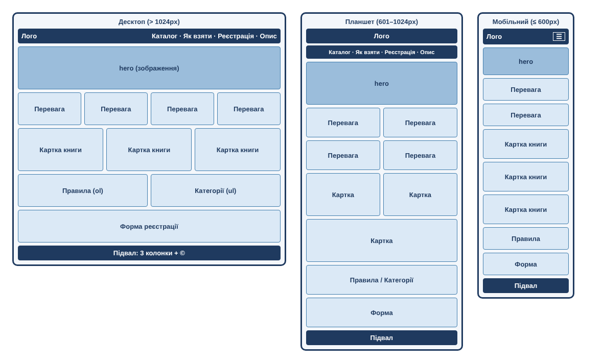
Макет BookNest для трьох розмірів екрана Тип макету
Використано адаптивний (responsive) гумовий макет : ширина блоків задається у відсотках, rem, vw та через flex/grid, тому сторінка розтягується й стискається разом із вікном. Для трьох діапазонів ширини (desktop, tablet, mobile) використовуються медіа-запити, які змінюють кількість колонок і вигляд меню. Порівняно з фіксованим макетом (ширина в px) він зручніший на різних пристроях, але складніший у розрахунку; порівняно з чистим гумовим — не розтягується безмежно (max-width: 70rem) і не «ламається» на вузьких екранах.
Код макету (скелет)
<header> логотип + навігація (на мобільному — кнопка «бургер») </header>
<main>
<section id="hero"> зображення + привітання </section>
<section id="features"> grid: 4 → 2 → 1 колонка </section>
<section id="catalog"> flex-картки: 3 → 2 → 1 в ряд </section>
<section id="rules"> flex: 2 колонки → 1 </section>
<section id="register"> форма </section>
</main>
<footer> 3 колонки (контакти, розділи) + © </footer>Файлова структура WEB-застосунку
IC-44_appWEB-KirieievMaksym-FIOT-2026/
├── index.html
├── about.html
├── css/
│ └── style.css
├── js/
│ └── menu.js
└── images/
├── logo.svg hero.svg
└── book1.svg book2.svg book3.svgГоловна сторінка WEB-застосунку (скріншот)
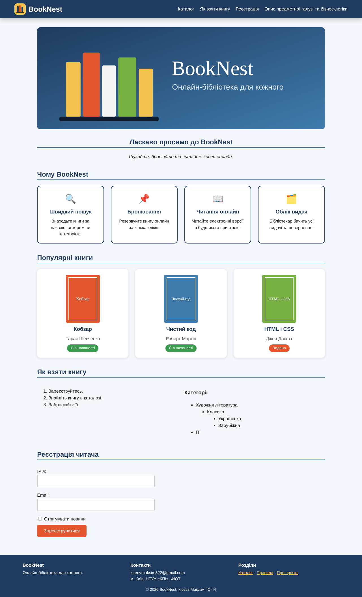
Головна сторінка BookNest — десктопна версія (1280px) Жива сторінка: https://d1ff1337.github.io/IC-44_appWEB-KirieievMaksym-FIOT-2026/
Код головної сторінки WEB-застосунку
index.html <!DOCTYPE html>
<html lang="uk">
<head>
<meta charset="UTF-8">
<meta name="viewport" content="width=device-width, initial-scale=1.0">
<title>BookNest — онлайн-бібліотека</title>
<link rel="stylesheet" href="css/style.css">
<script src="js/menu.js" defer></script>
</head>
<body>
<header id="main-header">
<a class="logo" href="index.html" aria-label="BookNest — на головну">
<img src="images/logo.svg" alt="" width="40" height="40">
<span>BookNest</span>
</a>
<button class="burger" id="burger" type="button" aria-label="Відкрити меню" aria-expanded="false" aria-controls="menu">
<span></span><span></span><span></span>
</button>
<nav id="menu" aria-label="Головне меню">
<a href="#catalog">Каталог</a>
<a href="#rules">Як взяти книгу</a>
<a href="#register">Реєстрація</a>
<a href="about.html">Опис предметної галузі та бізнес-логіки</a>
</nav>
</header>
<main>
<section id="hero">
<img src="images/hero.svg" alt="Полиця з книгами BookNest" width="900" height="320">
<h2>Ласкаво просимо до BookNest</h2>
<p>Шукайте, бронюйте та читайте книги онлайн.</p>
</section>
<section id="features">
<h2>Чому BookNest</h2>
<div class="features">
<article class="feature"><span class="ico">🔍</span><h3>Швидкий пошук</h3><p>Знаходьте книги за назвою, автором чи категорією.</p></article>
<article class="feature"><span class="ico">📌</span><h3>Бронювання</h3><p>Резервуйте книгу онлайн за кілька кліків.</p></article>
<article class="feature"><span class="ico">📖</span><h3>Читання онлайн</h3><p>Читайте електронні версії з будь-якого пристрою.</p></article>
<article class="feature"><span class="ico">🗂️</span><h3>Облік видач</h3><p>Бібліотекар бачить усі видачі та повернення.</p></article>
</div>
</section>
<section id="catalog">
<h2>Популярні книги</h2>
<div class="cards">
<article class="card">
<img src="images/book1.svg" alt="Кобзар" width="120">
<h3>Кобзар</h3>
<p class="author">Тарас Шевченко</p>
<span class="status ok">Є в наявності</span>
</article>
<article class="card">
<img src="images/book2.svg" alt="Чистий код" width="120">
<h3>Чистий код</h3>
<p class="author">Роберт Мартін</p>
<span class="status ok">Є в наявності</span>
</article>
<article class="card">
<img src="images/book3.svg" alt="HTML і CSS" width="120">
<h3>HTML і CSS</h3>
<p class="author">Джон Дакетт</p>
<span class="status no">Видана</span>
</article>
</div>
</section>
<section id="rules">
<h2>Як взяти книгу</h2>
<div class="two-col">
<div>
<ol>
<li>Зареєструйтесь.</li>
<li>Знайдіть книгу в каталозі.</li>
<li>Забронюйте її.</li>
</ol>
</div>
<div>
<h3>Категорії</h3>
<ul>
<li>Художня література
<ul>
<li>Класика
<ul><li>Українська</li><li>Зарубіжна</li></ul>
</li>
</ul>
</li>
<li>IT</li>
</ul>
</div>
</div>
</section>
<section id="register">
<h2>Реєстрація читача</h2>
<form action="#" method="post">
<label>Ім'я: <input type="text" name="name" required></label>
<label>Email: <input type="email" name="email" required></label>
<label class="check"><input type="checkbox" name="news"> Отримувати новини</label>
<button type="submit" class="btn">Зареєструватися</button>
</form>
</section>
</main>
<footer id="main-footer">
<div class="footer-inner">
<div>
<strong>BookNest</strong>
<p>Онлайн-бібліотека для кожного.</p>
</div>
<div>
<strong>Контакти</strong>
<p>kireevmaksim322@gmail.com<br>м. Київ, НТУУ «КПІ», ФІОТ</p>
</div>
<div>
<strong>Розділи</strong>
<p><a href="#catalog">Каталог</a> · <a href="#rules">Правила</a> · <a href="about.html">Про проєкт</a></p>
</div>
</div>
<p class="copy">© 2026 BookNest. Кірєєв Максим, ІС-44</p>
</footer>
</body>
</html>css/style.css /* ===== Змінні та базові стилі (rem — відносно розміру шрифту html) ===== */
:root {
--dark: #1f3a5f;
--blue: #3f7cac;
--accent: #e4572e;
--accent-dark: #c4421d;
--gold: #f2c14e;
--bg: #f4f7fb;
--gap: 1.5rem;
}
* { box-sizing: border-box; }
html { font-size: 100%; scroll-behavior: smooth; }
body { margin: 0; font-family: Arial, sans-serif; line-height: 1.5; color: #222; background: var(--bg); }
h1 { margin: 0; color: #fff; }
h2 { color: var(--dark); border-bottom: 0.125rem solid var(--blue); }
a { color: var(--blue); }
img { max-width: 100%; height: auto; }
/* ===== Шапка: логотип + навігація (flexbox) ===== */
#main-header {
position: sticky; top: 0; z-index: 10;
display: flex; flex-wrap: wrap; align-items: center; justify-content: space-between;
gap: 0.75rem 1.5rem; padding: 0.75rem 4vw; background: var(--dark);
box-shadow: 0 0.25rem 1rem rgba(0, 0, 0, .25);
}
.logo { display: flex; align-items: center; gap: 0.6rem; font-size: 1.6rem; font-weight: bold; color: #fff; text-decoration: none; }
.logo img { transition: transform .4s; }
.logo:hover img { transform: rotate(-10deg) scale(1.1); }
nav { display: flex; flex-wrap: wrap; gap: 0.5rem 1.25rem; }
nav > a {
position: relative; padding: 0.25rem 0; color: #fff; text-decoration: none;
}
/* підкреслення, що плавно виростає при наведенні */
nav > a::after {
content: ""; position: absolute; left: 0; bottom: 0; width: 100%; height: 0.125rem;
background: var(--gold); transform: scaleX(0); transform-origin: left; transition: transform .3s;
}
nav > a:hover::after, nav > a:focus-visible::after { transform: scaleX(1); }
/* Кнопка «бургер» (на великих екранах прихована) */
.burger {
display: none; width: 2.75rem; height: 2.75rem; padding: 0.6rem;
flex-direction: column; justify-content: space-between;
background: transparent; border: 0.125rem solid #fff; border-radius: 0.5rem; cursor: pointer;
}
.burger span { display: block; height: 0.18rem; background: #fff; border-radius: 0.1rem; transition: transform .3s, opacity .3s; }
.burger.active span:nth-child(1) { transform: translateY(0.52rem) rotate(45deg); }
.burger.active span:nth-child(2) { opacity: 0; }
.burger.active span:nth-child(3) { transform: translateY(-0.52rem) rotate(-45deg); }
/* ===== Основний блок ===== */
main { max-width: 70rem; width: 100%; margin: 0 auto; padding: 0 4vw 2rem; }
main.doc { max-width: 56rem; }
section { margin-top: 2rem; }
#hero { text-align: center; }
#hero img { width: 100%; max-height: 45vh; object-fit: cover; border-radius: 0.75rem; }
h2 + p { font-style: italic; }
/* Картки переваг — CSS Grid */
.features { display: grid; grid-template-columns: repeat(4, 1fr); gap: var(--gap); }
.feature { padding: 1.25rem; text-align: center; background: #fff; border: 0.125rem solid var(--dark); border-radius: 0.75rem; }
.feature .ico { font-size: 2rem; }
.feature h3 { margin: 0.5rem 0; color: var(--dark); }
.feature p { margin: 0; font-size: 0.95rem; }
/* Картки книг — Flexbox із переносом */
.cards { display: flex; flex-wrap: wrap; gap: var(--gap); }
.card {
flex: 1 1 calc((100% - 2 * var(--gap)) / 3);
display: flex; flex-direction: column; align-items: center; gap: 0.5rem;
padding: 1.25rem; text-align: center; background: #fff; border-radius: 0.75rem;
box-shadow: 0 0.125rem 0.5rem rgba(31, 58, 95, .15);
transition: transform .3s, box-shadow .3s;
}
.card h3 { margin: 0; color: var(--dark); }
.card .author { margin: 0; color: #555; }
.status { padding: 0.2rem 0.8rem; font-size: 0.85rem; color: #fff; border-radius: 1rem; }
.status.ok { background: #3a9d4d; }
.status.no { background: var(--accent); }
.two-col { display: flex; flex-wrap: wrap; gap: var(--gap); }
.two-col > div { flex: 1 1 18rem; }
.btn { padding: 0.6rem 1.5rem; font: inherit; color: #fff; background: var(--accent); border: 0; border-radius: 0.4rem; cursor: pointer; transition: background .3s, transform .2s; }
.btn:hover { background: var(--accent-dark); }
.btn:active { transform: scale(.96); }
table { width: 100%; border-collapse: collapse; }
th, td { padding: 0.5rem; border: 1px solid #ccc; }
th { color: #fff; background: var(--dark); }
tr:nth-child(even) { background: #eef3f9; }
ul { list-style-type: square; }
ul ul { list-style-type: circle; }
ul ul ul { list-style-type: disc; }
form { display: flex; flex-direction: column; align-items: flex-start; gap: 0.5rem; max-width: 26rem; }
label { display: block; width: 100%; margin-top: 0.5rem; }
input[type="text"], input[type="email"] { width: 100%; padding: 0.5rem; font: inherit; border: 0.125rem solid #ccc; border-radius: 0.3rem; transition: border-color .3s, box-shadow .3s; }
input[type="text"]:focus, input[type="email"]:focus { outline: 0; border-color: var(--blue); box-shadow: 0 0 0 0.2rem rgba(63, 124, 172, .25); }
/* ===== Підвал ===== */
#main-footer { margin-top: 2rem; padding: 1.5rem 4vw 1rem; color: #fff; background: var(--dark); }
.footer-inner { display: flex; flex-wrap: wrap; justify-content: space-between; gap: var(--gap); max-width: 70rem; margin: 0 auto; }
.footer-inner > div { flex: 1 1 14rem; }
.footer-inner p { margin: 0.25rem 0 0; font-size: 0.9rem; }
.footer-inner a { color: var(--gold); }
.copy { margin: 1rem 0 0; text-align: center; font-size: 0.85rem; }
/* ===== Анімації ===== */
@keyframes fadeUp { from { opacity: 0; transform: translateY(1.5rem); } to { opacity: 1; transform: none; } }
@keyframes slideDown { from { opacity: 0; transform: translateY(-0.75rem); } to { opacity: 1; transform: none; } }
section { animation: fadeUp .8s ease both; }
#features { animation-delay: .1s; }
#catalog { animation-delay: .2s; }
.feature, .card { animation: fadeUp .8s ease both; }
.card:nth-child(2), .feature:nth-child(2) { animation-delay: .15s; }
.card:nth-child(3), .feature:nth-child(3) { animation-delay: .3s; }
.feature:nth-child(4) { animation-delay: .45s; }
/* ==========================================================
МЕДІА-ЗАПИТИ (mobile / tablet / desktop) та логічні оператори
========================================================== */
/* Ефекти наведення лише там, де є «справжній» курсор: and */
@media (hover: hover) and (pointer: fine) {
.card:hover { transform: translateY(-0.5rem); box-shadow: 0 0.75rem 1.5rem rgba(31, 58, 95, .3); }
.feature { transition: background .3s, transform .3s; }
.feature:hover { background: #fff7e0; transform: scale(1.03); }
}
/* ПЛАНШЕТ: 601px – 1024px (and — «і») */
@media screen and (min-width: 601px) and (max-width: 1024px) {
#main-header nav { flex-basis: 100%; justify-content: space-between; }
.features { grid-template-columns: repeat(2, 1fr); }
.card { flex-basis: calc((100% - var(--gap)) / 2); }
}
/* МОБІЛЬНИЙ: до 600px — бургер-меню, одна колонка */
@media screen and (max-width: 600px) {
html { font-size: 93.75%; }
.burger { display: flex; }
#main-header nav {
display: none; flex-direction: column; flex-basis: calc(100% + 8vw); gap: 0; margin: 0 -4vw -0.75rem; padding: 0.5rem 4vw 0.75rem;
background: #17304f;
}
#main-header nav.open { display: flex; animation: slideDown .35s ease; }
nav > a { padding: 0.75rem 0; border-bottom: 1px solid rgba(255, 255, 255, .15); }
.features { grid-template-columns: 1fr; }
.card { flex-basis: 100%; }
#hero img { max-height: 30vh; }
}
/* «Або» (кома): дуже вузький екран АБО низький екран у горизонтальній орієнтації */
@media (max-width: 360px), (orientation: landscape) and (max-height: 420px) {
#main-header { position: static; }
#hero img { max-height: 60vh; }
}
/* Горизонтальна орієнтація на планшетах/телефонах */
@media (orientation: landscape) and (max-width: 900px) {
.features { grid-template-columns: repeat(2, 1fr); }
}
/* not: усі екрани, окрім друку — плавна прокрутка */
@media not print { html { scroll-behavior: smooth; } }
/* Користувач просить менше анімацій */
@media (prefers-reduced-motion: reduce) {
* { animation: none !important; transition: none !important; }
}
/* Друк */
@media print {
#main-header, .burger { display: none; }
body { background: #fff; }
}js/menu.js // Бургер-меню: відкриття/закриття навігації на малих екранах
const burger = document.getElementById("burger");
const menu = document.getElementById("menu");
function setMenu(open) {
menu.classList.toggle("open", open);
burger.classList.toggle("active", open);
burger.setAttribute("aria-expanded", String(open));
burger.setAttribute("aria-label", open ? "Закрити меню" : "Відкрити меню");
}
burger.addEventListener("click", () => setMenu(!menu.classList.contains("open")));
// закриття меню після вибору пункту
menu.querySelectorAll("a").forEach(a => a.addEventListener("click", () => setMenu(false)));
// закриття клавішею Esc
document.addEventListener("keydown", e => { if (e.key === "Escape") setMenu(false); });
// при збільшенні вікна меню скидається
window.matchMedia("(min-width: 601px)").addEventListener("change", e => { if (e.matches) setMenu(false); });Особливості макету
Семантика: header (логотип + nav), main із section та article-картками, footer з контактами.Flexbox: шапка (justify-content: space-between), картки книг (flex-wrap, flex: 1 1 …), підвал.Grid: блок переваг (grid-template-columns: repeat(4, 1fr)).Відносні одиниці: rem (відступи, шрифти), % (flex-basis, ширини), vw (бічні поля 4vw), vh (max-height: 45vh для hero), em-залежні розміри через успадкування.Анімації: поява секцій і карток (@keyframes fadeUp), плавне відкриття мобільного меню (slideDown), підкреслення пунктів меню, підняття карток та зміна кольору кнопок при наведенні (transition), перетворення «бургера» на хрестик. Адаптивна верстка: десктопна, планшетна та мобільна версії
Метатег viewport
<meta name="viewport" content="width=device-width, initial-scale=1.0">Без нього мобільний браузер відображає сторінку у віртуальному вікні ~980px і зменшує її. Значення width=device-width задає ширину layout viewport, що дорівнює ширині екрана пристрою, а initial-scale=1.0 — початковий масштаб 100%.
Обрані брейкпоінти
Версія Ширина Що змінюється Десктоп понад 1024px Базові стилі: меню в один рядок, 4 колонки переваг, 3 картки в ряд, підвал у 3 колонки. Планшет 601–1024px Меню переноситься під логотип на всю ширину; 2 колонки переваг; 2 картки в ряд. Мобільна до 600px Меню згортається в «бургер»; усі блоки в одну колонку; базовий шрифт зменшується до 93,75%; висота hero обмежується (30vh).
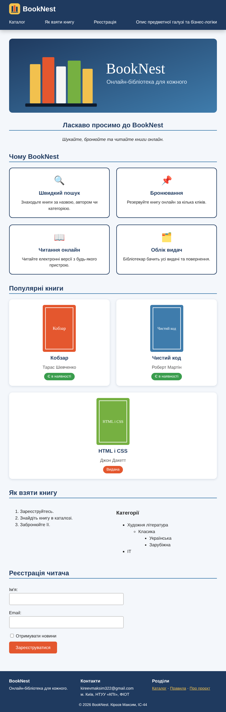
Планшетна версія — 820px 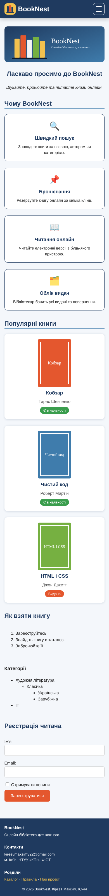
Мобільна версія — 390px 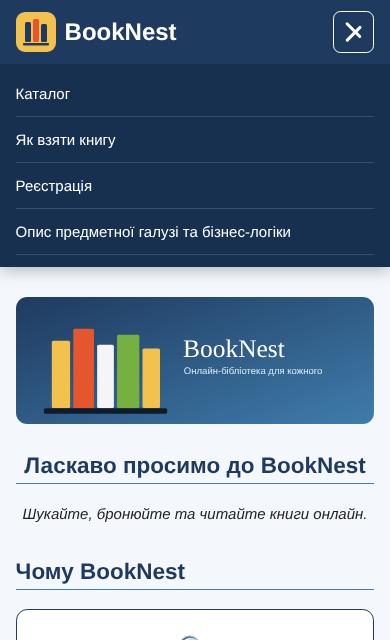
Відкрите «бургер»-меню Медіа-запити та логічні оператори
/* and — «і»: діапазон ширин (планшет) */
@media screen and (min-width: 601px) and (max-width: 1024px) { ... }
/* and — ефекти наведення лише на пристроях із курсором */
@media (hover: hover) and (pointer: fine) { ... }
/* кома — «або»: дуже вузький екран АБО низький екран у горизонтальній орієнтації */
@media (max-width: 360px), (orientation: landscape) and (max-height: 420px) { ... }
/* not — усі пристрої, окрім друку */
@media not print { html { scroll-behavior: smooth; } }
/* орієнтація пристрою */
@media (orientation: landscape) and (max-width: 900px) { ... }
/* повага до налаштувань користувача */
@media (prefers-reduced-motion: reduce) { * { animation: none !important; } }Оператор Значення Приклад у проєкті andвсі умови одночасно (логічне «І») screen and (min-width: 601px) and (max-width: 1024px), (кома)хоча б одна умова (логічне «АБО») (max-width: 360px), (orientation: landscape) and (max-height: 420px)notзаперечення всього запиту @media not printonlyприховує запит від старих браузерів @media only screen and (max-width: 600px)
Як створювалася кожна версія
Десктоп — базові стилі без медіа-запитів: гнучкі контейнери (flex, grid) і обмеження max-width: 70rem.Планшет — діапазонний запит перебудовує сітки на 2 колонки (repeat(2, 1fr), flex-basis: calc((100% − gap)/2)) і переносить меню на окремий рядок (flex-basis: 100%).Мобільна — .burger стає видимою (display: flex), nav ховається та показується класом .open, який перемикає js/menu.js; сітки переходять в одну колонку.
Адаптивність звітного документа
До style.css цього звіту також додано медіа-запити: на планшеті бічне меню стає рядом над вмістом, на мобільному кнопки лабораторних і розділів вишиковуються в колонку, зменшуються поля та шрифти коду. Дивіться розділ «Адаптивність звіту» нижче у файлі style.css.
* { box-sizing: border-box; }
body { margin: 0; font-family: Arial, sans-serif; background: #f4f7fb; color: #222; }
header { display: flex; justify-content: space-between; align-items: center; padding: 16px 32px; color: #fff; background: #1f3a5f; }
h1 { margin: 0; font-size: 1.2rem; }
h2 { color: #1f3a5f; border-bottom: 2px solid #3f7cac; }
img { max-width: 100%; }
header img { width: 80px; height: 95px; border: 3px solid #fff; }
nav { display: flex; flex-wrap: wrap; gap: 8px; padding: 12px 32px; background: #fff; }
button { padding: 8px; font: inherit; color: #1f3a5f; background: #fff; border: 2px solid #1f3a5f; border-radius: 12px; cursor: pointer; }
nav button { flex: 1; }
button.active { background: #f2c14e; }
#layout { display: flex; gap: 20px; padding: 20px 32px; }
aside { display: flex; flex-direction: column; gap: 8px; width: 280px; }
.side { display: flex; flex-direction: column; gap: 8px; }
.sub { margin-left: 20px; }
main { flex: 1; min-width: 0; padding: 0 24px 24px; background: #fff; border: 2px solid #1f3a5f; }
pre { padding: 12px; overflow: auto; max-height: 400px; color: #eee; background: #0e1b2c; }
table { width: 100%; border-collapse: collapse; }
th, td { padding: 6px; border: 1px solid #ccc; text-align: left; }
th { color: #fff; background: #1f3a5f; }
[hidden] { display: none; }
code { font-family: Consolas, monospace; }
figure { margin: 1rem 0; }
figcaption { font-size: 0.85rem; color: #555; }
.shots { display: flex; flex-wrap: wrap; align-items: flex-start; gap: 1rem; }
.shots figure { flex: 1 1 14rem; margin: 0; }
a { overflow-wrap: anywhere; }
main { overflow-wrap: break-word; }
/* ===== Адаптивність звіту (ЛР №3) ===== */
/* Планшет: 601px – 1024px (and) */
@media screen and (min-width: 601px) and (max-width: 1024px) {
header { padding: 0.75rem 4vw; }
nav { padding: 0.75rem 4vw; }
#layout { flex-direction: column; padding: 1rem 4vw; }
aside { width: 100%; flex-direction: row; flex-wrap: wrap; }
.side { flex-direction: row; flex-wrap: wrap; }
.sub { margin-left: 0; }
}
/* Мобільний: до 600px */
@media screen and (max-width: 600px) {
header { flex-direction: column-reverse; gap: 0.75rem; padding: 0.75rem 4vw; text-align: center; }
h1 { font-size: 0.95rem; }
header img { width: 56px; height: 66px; }
nav { flex-direction: column; padding: 0.75rem 4vw; }
#layout { flex-direction: column; padding: 0.75rem 4vw; }
aside { width: 100%; }
.sub { margin-left: 1rem; }
main { padding: 0 0.75rem 1rem; }
pre { max-height: 300px; font-size: 0.75rem; }
th, td { padding: 4px; font-size: 0.85rem; }
}
/* «або» (кома): дуже вузький екран або низький екран у горизонтальній орієнтації */
@media (max-width: 360px), (orientation: landscape) and (max-height: 420px) {
pre { max-height: 220px; }
}
/* not: усе, окрім друку */
@media not print { html { scroll-behavior: smooth; } }
@media print { nav, aside { display: none; } [hidden] { display: block; } }Завдання №2. Таблична та блокова верстка
Номер варіанта: таблична верстка — 7 , блокова (плаваючі елементи) — 8 (7 + 1).
Верстка Схема Спосіб Таблична, варіант 7 1 — шапка (на всю ширину), 2 — ліва колонка, 4 — центр, 5 — права колонка, 3 — підвал <table> з colspan="3" для шапки й підвалуБлокова, варіант 8 1 — шапка, 2 — висока ліва колонка, 5 — смуга зверху справа, 4 — основний вміст, 3 — підвал float: left + clear: both
Фіксована верстка має сталу ширину в пікселях (800px) — надійна, але не підлаштовується під екран. Гумова задається у відсотках і розтягується разом із вікном, проте на дуже широких екранах рядки тексту стають задовгими.
Фіксована таблична верстка Ширина таблиці — 800px, колонки 150px / 500px / 150px (елемент <colgroup>).
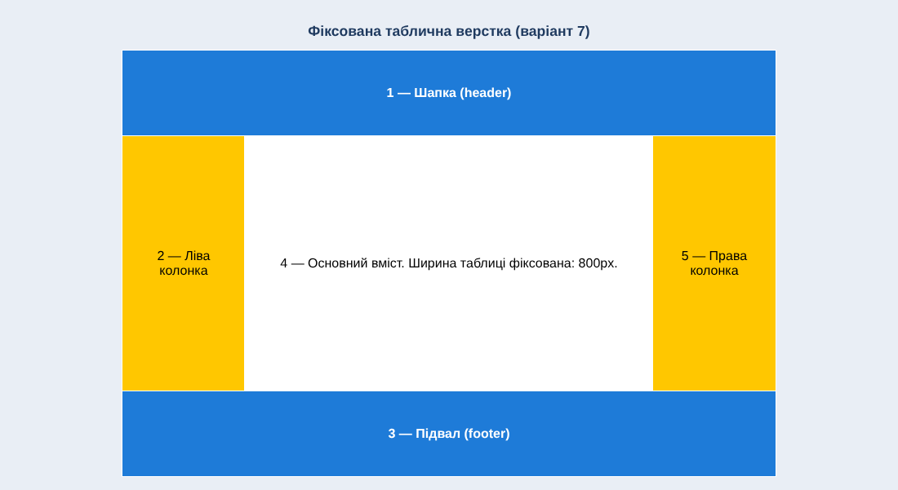
Фіксована таблична верстка Жива сторінка: https://d1ff1337.github.io/IC-44_appRECORD-KirieievMaksym-FIOT-2026/lr3/table-fixed.html
table-fixed.html <!DOCTYPE html>
<html lang="uk">
<head>
<meta charset="UTF-8">
<meta name="viewport" content="width=device-width, initial-scale=1.0">
<title>Фіксована таблична верстка (варіант 7)</title>
<link rel="stylesheet" href="css/task2.css">
<link rel="stylesheet" href="css/table-fixed.css">
</head>
<body>
<h1>Фіксована таблична верстка (варіант 7)</h1>
<table class="layout">
<colgroup><col class="w1"><col class="w2"><col class="w1"></colgroup>
<tr><td class="c1" colspan="3">1 — Шапка (header)</td></tr>
<tr>
<td class="c2">2 — Ліва колонка</td>
<td class="c4">4 — Основний вміст. Ширина таблиці фіксована: 800px.</td>
<td class="c5">5 — Права колонка</td>
</tr>
<tr><td class="c3" colspan="3">3 — Підвал (footer)</td></tr>
</table>
</body>
</html>css/task2.css /* Завдання №2: спільні стилі для табличної та блокової верстки */
body { margin: 0; padding: 1rem; font-family: Arial, sans-serif; background: #e9eef5; }
h1 { font-size: 1.1rem; text-align: center; color: #1f3a5f; }
.c1, .c3 { background: #1e7bd8; color: #fff; text-align: center; font-weight: bold; }
.c2, .c5 { background: #ffc700; text-align: center; }
.c4 { background: #fff; text-align: center; }
.cell { padding: 1rem; }css/table-fixed.css /* Фіксована таблична верстка: ширина в px */
.layout { width: 800px; margin: 0 auto; border-collapse: collapse; table-layout: fixed; }
.layout td { height: 4rem; padding: 0.75rem; border: 1px solid #fff; }
.layout .c1, .layout .c3 { height: 5rem; }
.layout .w1 { width: 150px; }
.layout .w2 { width: 500px; }
.layout .c4 { height: 18rem; }Гумова таблична верстка Ширина таблиці — 100%, колонки 20% / 60% / 20%. Нижче — та сама сторінка у вужчому вікні.
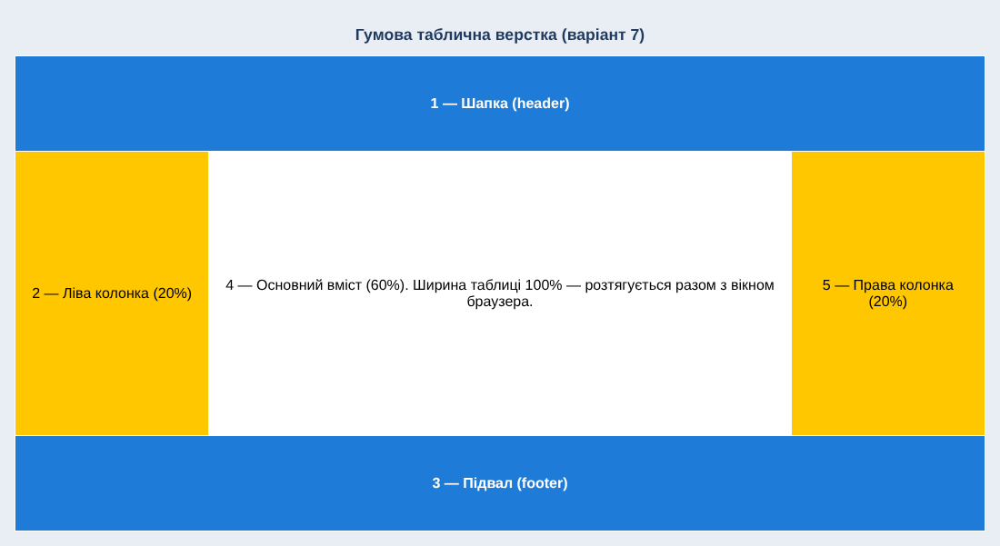
Гумова таблична верстка (1100px) 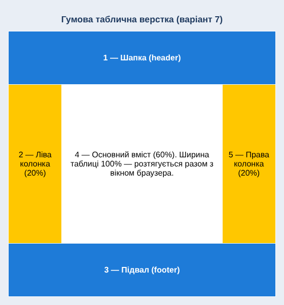
Гумова таблична верстка (560px) Жива сторінка: https://d1ff1337.github.io/IC-44_appRECORD-KirieievMaksym-FIOT-2026/lr3/table-fluid.html
table-fluid.html <!DOCTYPE html>
<html lang="uk">
<head>
<meta charset="UTF-8">
<meta name="viewport" content="width=device-width, initial-scale=1.0">
<title>Гумова таблична верстка (варіант 7)</title>
<link rel="stylesheet" href="css/task2.css">
<link rel="stylesheet" href="css/table-fluid.css">
</head>
<body>
<h1>Гумова таблична верстка (варіант 7)</h1>
<table class="layout">
<colgroup><col class="w1"><col class="w2"><col class="w1"></colgroup>
<tr><td class="c1" colspan="3">1 — Шапка (header)</td></tr>
<tr>
<td class="c2">2 — Ліва колонка (20%)</td>
<td class="c4">4 — Основний вміст (60%). Ширина таблиці 100% — розтягується разом з вікном браузера.</td>
<td class="c5">5 — Права колонка (20%)</td>
</tr>
<tr><td class="c3" colspan="3">3 — Підвал (footer)</td></tr>
</table>
</body>
</html>css/table-fluid.css /* Гумова таблична верстка: ширина у відсотках */
.layout { width: 100%; margin: 0 auto; border-collapse: collapse; table-layout: fixed; }
.layout td { height: 4rem; padding: 0.75rem; border: 1px solid #fff; }
.layout .c1, .layout .c3 { height: 5rem; }
.layout .w1 { width: 20%; }
.layout .w2 { width: 60%; }
.layout .c4 { height: 18rem; }Фіксована блокова верстка Контейнер 800px; блоки 2, 5, 4 — float: left, підвал — clear: both. Рівну висоту колонок забезпечує прийом «хибної колонки» (градієнтний фон контейнера з overflow: hidden).
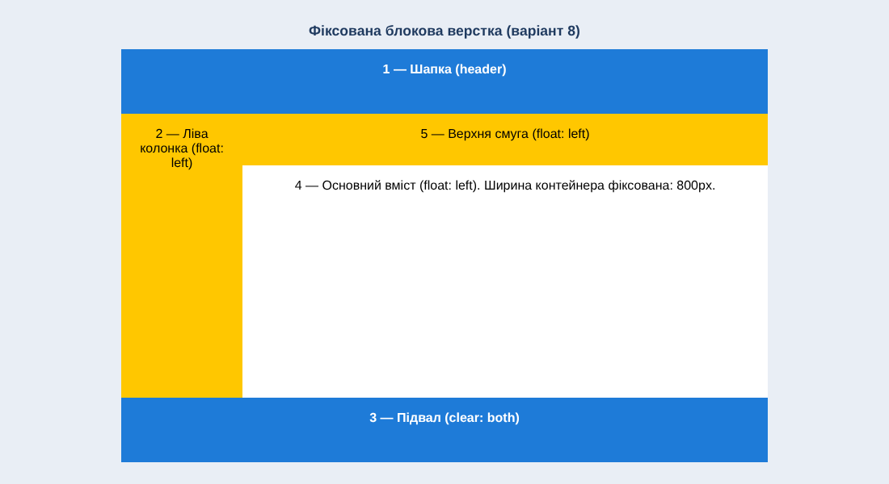
Фіксована блокова верстка Жива сторінка: https://d1ff1337.github.io/IC-44_appRECORD-KirieievMaksym-FIOT-2026/lr3/block-fixed.html
block-fixed.html <!DOCTYPE html>
<html lang="uk">
<head>
<meta charset="UTF-8">
<meta name="viewport" content="width=device-width, initial-scale=1.0">
<title>Фіксована блокова верстка (варіант 8)</title>
<link rel="stylesheet" href="css/task2.css">
<link rel="stylesheet" href="css/block-fixed.css">
</head>
<body>
<h1>Фіксована блокова верстка (варіант 8)</h1>
<div class="wrap">
<div class="c1 cell" id="header">1 — Шапка (header)</div>
<div class="body">
<div class="c2 cell" id="left">2 — Ліва колонка (float: left)</div>
<div class="c5 cell" id="top">5 — Верхня смуга (float: left)</div>
<div class="c4 cell" id="content">4 — Основний вміст (float: left). Ширина контейнера фіксована: 800px.</div>
</div>
<div class="c3 cell" id="footer">3 — Підвал (clear: both)</div>
</div>
</body>
</html>css/block-fixed.css /* Фіксована блокова верстка на плаваючих елементах (float) */
.wrap { width: 800px; margin: 0 auto; }
.cell { box-sizing: border-box; }
#header, #footer { height: 5rem; }
/* «Хибна колонка»: фон лівої колонки малюється на контейнері, тому вона виглядає однакової висоти з правою частиною */
.body { overflow: hidden; background: linear-gradient(to right, #ffc700 150px, #fff 150px); }
#left { float: left; width: 150px; height: 22rem; }
#top { float: left; width: 650px; height: 4rem; background: #ffc700; }
#content { float: left; width: 650px; height: 18rem; }
#footer { clear: both; }Гумова блокова верстка Контейнер 100%; ліва колонка 20%, блоки 5 і 4 — по 80%. Нижче — вужче вікно.
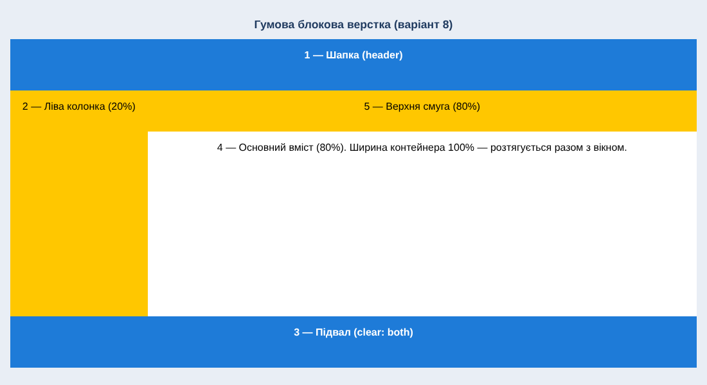
Гумова блокова верстка (1100px) 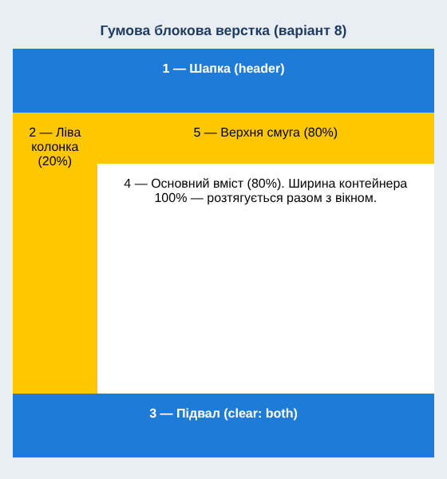
Гумова блокова верстка (560px) Жива сторінка: https://d1ff1337.github.io/IC-44_appRECORD-KirieievMaksym-FIOT-2026/lr3/block-fluid.html
block-fluid.html <!DOCTYPE html>
<html lang="uk">
<head>
<meta charset="UTF-8">
<meta name="viewport" content="width=device-width, initial-scale=1.0">
<title>Гумова блокова верстка (варіант 8)</title>
<link rel="stylesheet" href="css/task2.css">
<link rel="stylesheet" href="css/block-fluid.css">
</head>
<body>
<h1>Гумова блокова верстка (варіант 8)</h1>
<div class="wrap">
<div class="c1 cell" id="header">1 — Шапка (header)</div>
<div class="body">
<div class="c2 cell" id="left">2 — Ліва колонка (20%)</div>
<div class="c5 cell" id="top">5 — Верхня смуга (80%)</div>
<div class="c4 cell" id="content">4 — Основний вміст (80%). Ширина контейнера 100% — розтягується разом з вікном.</div>
</div>
<div class="c3 cell" id="footer">3 — Підвал (clear: both)</div>
</div>
</body>
</html>css/block-fluid.css /* Гумова блокова верстка на плаваючих елементах (float), ширини у % */
.wrap { width: 100%; margin: 0 auto; }
.cell { box-sizing: border-box; }
#header, #footer { height: 5rem; }
.body { overflow: hidden; background: linear-gradient(to right, #ffc700 20%, #fff 20%); }
#left { float: left; width: 20%; height: 22rem; }
#top { float: left; width: 80%; height: 4rem; background: #ffc700; }
#content { float: left; width: 80%; height: 18rem; }
#footer { clear: both; }Завдання №3. Верстка за технологією FLEXBOX
Номер варіанта — 7 . Сторінка складається з п'яти блоків: навігаційне меню, програма курсу React, тарифи («Стаціонар»), банер «Навчайся зараз — сплачуй потім», головний блок курсу QA. Жива сторінка: https://d1ff1337.github.io/IC-44_appRECORD-KirieievMaksym-FIOT-2026/lr3/flexbox.html
Особливості макету
Меню — display: flex; flex-wrap: wrap, кнопка міста розтягується через flex: 1 1 10rem.
Програма курсу — рядок із трьох flex-блоків (justify-content: space-between): лічильник годин, список тем, фоновий напис; кнопка вирівнюється align-self: flex-end.
Тарифи — три картки у flex-wrap контейнері; у кожній картці flex-direction: column і margin-top: auto на блоці ціни, щоб ціни й кнопки були на одному рівні в усіх картках.
Банер і QA-блок — justify-content: space-between, align-items: center.
Шрифт Montserrat підключено локально через @font-face; фотографію викладача замінено власною SVG-ілюстрацією.
Адаптивність: на планшеті картки по 2 в ряд і ховається фоновий напис, на мобільному — одна колонка. Зовнішній вигляд сторінки (Flexbox) 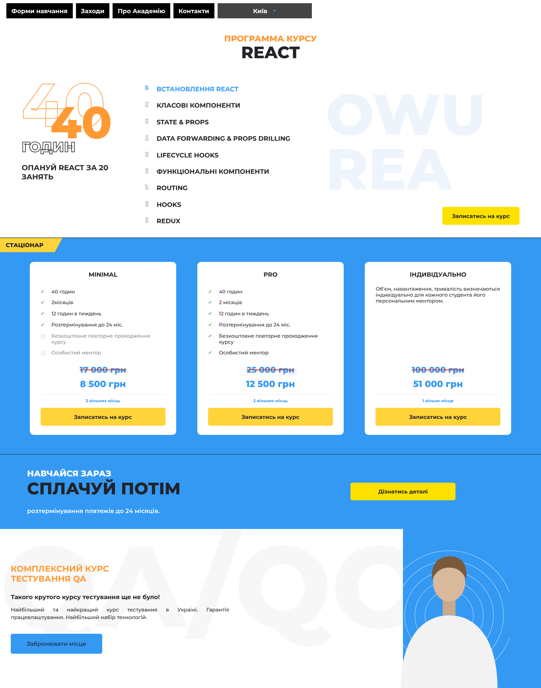
Сторінка Flexbox — десктоп (1360px) 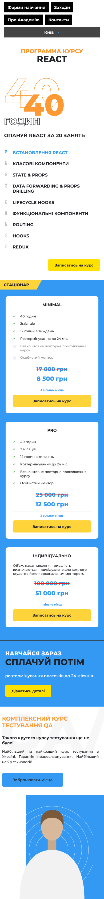
Сторінка Flexbox — мобільна версія (390px) HTML-код сторінки Flexbox <!DOCTYPE html>
<html lang="uk">
<head>
<meta charset="UTF-8">
<meta name="viewport" content="width=device-width, initial-scale=1.0">
<title>Завдання №3 — Flexbox (варіант 7)</title>
<link rel="stylesheet" href="css/fonts.css">
<link rel="stylesheet" href="css/flexbox.css">
</head>
<body>
<!-- 1. Навігація -->
<header class="topbar">
<nav class="menu" aria-label="Головне меню">
<a href="#">Форми навчання</a>
<a href="#">Заходи</a>
<a href="#">Про Академію</a>
<a href="#">Контакти</a>
<button class="city" type="button">Київ <span class="arrow"></span></button>
</nav>
</header>
<!-- 2. Програма курсу -->
<section class="program">
<h2 class="program__title"><span>Программа курсу</span>React</h2>
<div class="program__row">
<div class="hours">
<div class="hours__num"><span class="outline">40</span><span class="solid">40</span></div>
<div class="hours__label">годин</div>
<p class="hours__text">Опануй React за 20 занять</p>
</div>
<ol class="topics">
<li class="active"><i>01</i>Встановлення React</li>
<li><i>02</i>Класові компоненти</li>
<li><i>03</i>State & Props</li>
<li><i>04</i>Data forwarding & props drilling</li>
<li><i>05</i>Lifecycle hooks</li>
<li><i>06</i>Функціональні компоненти</li>
<li><i>07</i>Routing</li>
<li><i>08</i>Hooks</li>
<li><i>09</i>Redux</li>
</ol>
<div class="ghost" aria-hidden="true">OWU<br>REA</div>
</div>
<a class="btn btn--yellow program__btn" href="#">Записатись на курс</a>
</section>
<!-- 3. Тарифи -->
<section class="pricing">
<div class="pricing__tab">Стаціонар</div>
<div class="pricing__cards">
<article class="plan">
<h3>Minimal</h3>
<ul class="plan__list">
<li>40 годин</li>
<li>2місяців</li>
<li>12 годин в тиждень</li>
<li>Розтермінування до 24 міс.</li>
<li class="off">Безкоштовне повторне проходження курсу</li>
<li class="off">Особистий ментор</li>
</ul>
<div class="plan__old">17 000 грн</div>
<div class="plan__price">8 500 грн</div>
<div class="plan__places">3 вільних місць</div>
<a class="btn btn--gold" href="#">Записатись на курс</a>
</article>
<article class="plan">
<h3>Pro</h3>
<ul class="plan__list">
<li>40 годин</li>
<li>2 місяців</li>
<li>12 годин в тиждень</li>
<li>Розтермінування до 24 міс.</li>
<li>Безкоштовне повторне проходження курсу</li>
<li>Особистий ментор</li>
</ul>
<div class="plan__old">25 000 грн</div>
<div class="plan__price">12 500 грн</div>
<div class="plan__places">3 вільних місць</div>
<a class="btn btn--gold" href="#">Записатись на курс</a>
</article>
<article class="plan">
<h3>Індивідуально</h3>
<p class="plan__note">Обʼєм, навантаження, тривалість визначаються індивідуально для кожного студента його персональним ментором.</p>
<div class="plan__old">100 000 грн</div>
<div class="plan__price">51 000 грн</div>
<div class="plan__places">1 вільне місце</div>
<a class="btn btn--gold" href="#">Записатись на курс</a>
</article>
</div>
</section>
<!-- 4. Банер -->
<section class="banner">
<div class="banner__text">
<p class="banner__small">Навчайся зараз</p>
<p class="banner__big">Сплачуй потім</p>
<p class="banner__note">розтермінування платежів до 24 місяців.</p>
</div>
<a class="btn btn--yellow" href="#">Дізнатись деталі</a>
</section>
<!-- 5. Головний блок QA -->
<section class="hero">
<div class="hero__bgtext" aria-hidden="true">QA/QO</div>
<div class="hero__text">
<h1>Комплексний курс<br>тестування QA</h1>
<h3>Такого крутого курсу тестування ще не було!</h3>
<p>Найбільший та найкращий курс тестування в Україні. Гарантія працевлаштування. Найбільший набір технологій.</p>
<a class="btn btn--blue" href="#">Забронювати місце</a>
</div>
<div class="hero__photo">
<svg viewBox="0 0 300 380" role="img" aria-label="Ілюстрація: викладач курсу">
<g fill="none" stroke="#fff" stroke-opacity=".7" stroke-width="1">
<circle cx="150" cy="200" r="60"/><circle cx="150" cy="200" r="85"/><circle cx="150" cy="200" r="110"/><circle cx="150" cy="200" r="135"/><circle cx="150" cy="200" r="160"/>
</g>
<rect x="134" y="150" width="32" height="50" fill="#c9a98c"/>
<path d="M30 380c0-110 45-180 120-180s120 70 120 180z" fill="#f2f2f2"/>
<ellipse cx="150" cy="118" rx="40" ry="48" fill="#d8b99c"/>
<path d="M108 112c-4-45 20-58 44-58s46 14 40 58c-8-22-24-30-42-30s-32 8-42 30z" fill="#7a5a3a"/>
</svg>
</div>
</section>
</body>
</html>CSS-код сторінки Flexbox css/flexbox.css /* ===== Завдання №3, варіант 7 — верстка Flexbox ===== */
:root { --blue: #3399f3; --orange: #ff9933; --yellow: #ffe100; --gold: #ffd43b; --dark: #222328; }
* { box-sizing: border-box; }
html { font-size: 100%; }
body { margin: 0; font-family: "Montserrat", Arial, sans-serif; color: var(--dark); background: #fff; }
a { text-decoration: none; }
/* Кнопки */
.btn { display: inline-flex; align-items: center; justify-content: center; padding: 0.9rem 1.5rem; font-size: 0.85rem; font-weight: 700; color: var(--dark); border-radius: 0.3rem; transition: transform .25s, box-shadow .25s; }
.btn:hover { transform: translateY(-0.15rem); box-shadow: 0 0.4rem 0.9rem rgba(0, 0, 0, .25); }
.btn--yellow { background: var(--yellow); }
.btn--gold { background: var(--gold); }
.btn--blue { background: var(--blue); }
/* ===== 1. Навігація ===== */
.topbar { padding: 0.5rem 1rem; }
.menu { display: flex; flex-wrap: wrap; align-items: stretch; gap: 0.5rem; max-width: 48rem; }
.menu a, .city { display: flex; align-items: center; padding: 0.6rem 0.8rem; font: 700 0.95rem "Montserrat", Arial, sans-serif; color: #fff; background: #000; transition: background .25s; }
.menu a:hover { background: var(--blue); }
.city { flex: 1 1 10rem; justify-content: center; gap: 0.9rem; border: 0; background: #444; cursor: pointer; }
.arrow { width: 0; height: 0; border: 0.3rem solid transparent; border-top-color: var(--blue); margin-top: 0.3rem; }
/* ===== 2. Програма курсу ===== */
.program { display: flex; flex-direction: column; padding: 2rem 4%; border-bottom: 1px solid #000; }
.program__title { margin: 0 0 3rem; text-align: center; font-size: 2.6rem; font-weight: 800; line-height: 1.1; text-transform: uppercase; }
.program__title span { display: block; font-size: 1.3rem; color: var(--orange); text-transform: uppercase; }
.program__row { display: flex; align-items: flex-start; justify-content: space-between; gap: 2rem; }
.hours { flex: 0 0 22%; }
.hours__num { position: relative; height: 9rem; }
.outline, .solid { position: absolute; font-size: 9.5rem; font-weight: 800; line-height: 1; }
.outline { top: -1rem; left: 0; color: transparent; -webkit-text-stroke: 1.5px var(--orange); }
.solid { top: 3rem; left: 4.5rem; font-size: 7rem; color: var(--orange); }
.hours__label { font-size: 2.2rem; font-weight: 800; text-transform: uppercase; color: #fff; -webkit-text-stroke: 1.5px var(--dark); }
.hours__text { margin: 1.2rem 0 0; font-size: 1.15rem; font-weight: 700; text-transform: uppercase; }
.topics { flex: 0 0 34%; margin: 0; padding: 0; list-style: none; font-size: 1rem; font-weight: 700; text-transform: uppercase; }
.topics li { display: flex; align-items: flex-start; gap: 0.8rem; padding: 0.7rem 0; transition: color .25s, transform .25s; }
.topics li:hover { color: var(--blue); transform: translateX(0.4rem); }
.topics li.active { color: var(--blue); }
.topics i { flex: 0 0 1.2rem; font-style: normal; font-size: 0.7rem; color: #bbb; writing-mode: vertical-rl; transform: rotate(180deg); }
.topics li.active i { color: var(--blue); }
.ghost { flex: 1 1 auto; overflow: hidden; align-self: stretch; font-size: 9rem; font-weight: 800; line-height: 0.95; text-align: left; color: #eef4fc; white-space: nowrap; padding-top: 1rem; }
.ghost { -webkit-text-stroke: 0; }
.program__btn { align-self: flex-end; margin-top: -3.5rem; }
/* ===== 3. Тарифи ===== */
.pricing { padding: 0 0 3rem; background: var(--blue); }
.pricing__tab { display: inline-block; padding: 0.55rem 3rem 0.55rem 0.9rem; font-size: 0.9rem; font-weight: 800; text-transform: uppercase; background: var(--gold); clip-path: polygon(0 0, 100% 0, calc(100% - 1.2rem) 100%, 0 100%); }
.pricing__cards { display: flex; flex-wrap: wrap; justify-content: space-between; gap: 2rem; padding: 1.5rem 5.5% 0; }
.plan { display: flex; flex-direction: column; flex: 0 1 23rem; min-height: 26rem; padding: 1.4rem 1.7rem; background: #fff; border-radius: 0.6rem; transition: transform .3s, box-shadow .3s; }
.plan:hover { transform: translateY(-0.4rem); box-shadow: 0 0.8rem 1.6rem rgba(0, 0, 0, .25); }
.plan h3 { margin: 0 0 1.2rem; font-size: 0.95rem; text-align: center; text-transform: uppercase; }
.plan__list { margin: 0; padding: 0; list-style: none; font-size: 0.78rem; }
.plan__list li { position: relative; padding: 0.4rem 0 0.4rem 1.7rem; }
.plan__list li::before { content: "✔"; position: absolute; left: 0; color: #5cb85c; }
.plan__list li.off { color: #888; }
.plan__list li.off::before { content: ""; width: 0.8rem; height: 0.8rem; top: 0.55rem; background: #eaf2fc; border-radius: 50%; }
.plan__note { margin: 0; font-size: 0.78rem; }
.plan__old { margin-top: auto; padding-top: 1rem; font-size: 1.3rem; font-weight: 800; text-align: center; color: var(--blue); text-decoration: line-through; text-decoration-color: #e0262b; text-decoration-thickness: 2px; }
.plan__price { margin: 0.6rem 0; padding-bottom: 0.7rem; font-size: 1.4rem; font-weight: 800; text-align: center; color: var(--blue); border-bottom: 1px solid #eee; }
.plan__places { margin-bottom: 0.7rem; font-size: 0.65rem; font-weight: 700; text-align: center; color: var(--blue); }
/* ===== 4. Банер ===== */
.banner { display: flex; flex-wrap: wrap; align-items: center; justify-content: space-between; gap: 1.5rem; padding: 2.2rem 5%; background: var(--blue); border-top: 1px solid #333; }
.banner p { margin: 0; }
.banner__small { font-size: 1.3rem; font-weight: 800; text-transform: uppercase; color: #fff; }
.banner__big { font-size: 2.6rem; font-weight: 800; text-transform: uppercase; }
.banner__note { margin-top: 1.4rem !important; font-size: 0.95rem; font-weight: 600; color: #fff; }
.banner .btn { flex: 0 0 16.5rem; margin-right: 12%; }
/* ===== 5. Головний блок QA ===== */
.hero { position: relative; display: flex; align-items: center; justify-content: space-between; overflow: hidden; min-height: 25rem; border-top: 1px solid var(--blue); }
.hero__bgtext { position: absolute; top: 0; left: 0; font-size: 18rem; font-weight: 800; line-height: 1; color: #f7f7f7; white-space: nowrap; }
.hero__text { position: relative; flex: 0 1 38rem; padding: 2rem 2rem 2rem 2%; }
.hero h1 { margin: 0 0 1.5rem; font-size: 1.3rem; text-transform: uppercase; color: var(--orange); }
.hero h3 { margin: 0 0 0.8rem; font-size: 0.95rem; }
.hero p { margin: 0 0 2rem; font-size: 0.8rem; text-align: justify; line-height: 1.5; }
.hero .btn { padding: 1rem 2.5rem; font-weight: 500; font-size: 0.9rem; }
.hero__photo { position: relative; align-self: stretch; display: flex; align-items: flex-end; justify-content: center; flex: 0 0 34%; background: linear-gradient(to right, transparent 25%, var(--blue) 25%); }
.hero__photo svg { width: 100%; max-width: 19rem; height: auto; }
/* ===== Адаптивність (media queries) ===== */
@media (max-width: 1024px) {
.program__row { flex-wrap: wrap; }
.ghost { display: none; }
.hours, .topics { flex: 1 1 18rem; }
.program__btn { margin-top: 1.5rem; }
.plan { flex-basis: 45%; }
.hero__bgtext { font-size: 12rem; }
}
@media (max-width: 600px) {
.program__title { font-size: 2rem; }
.plan { flex-basis: 100%; min-height: 0; }
.banner { flex-direction: column; align-items: flex-start; }
.banner .btn { margin-right: 0; flex-basis: auto; }
.banner__big { font-size: 2rem; }
.hero { flex-direction: column; }
.hero__text { flex-basis: auto; padding-right: 5%; }
.hero__photo { flex-basis: auto; width: 100%; min-height: 18rem; }
}css/fonts.css /* Montserrat (локально, кирилиця + латиниця) */
@font-face { font-family: "Montserrat"; font-weight: 500; src: url("../fonts/montserrat-cyrillic-500-normal.woff2") format("woff2"); unicode-range: U+0400-04FF; }
@font-face { font-family: "Montserrat"; font-weight: 500; src: url("../fonts/montserrat-latin-500-normal.woff2") format("woff2"); unicode-range: U+0000-00FF; }
@font-face { font-family: "Montserrat"; font-weight: 600; src: url("../fonts/montserrat-cyrillic-600-normal.woff2") format("woff2"); unicode-range: U+0400-04FF; }
@font-face { font-family: "Montserrat"; font-weight: 600; src: url("../fonts/montserrat-latin-600-normal.woff2") format("woff2"); unicode-range: U+0000-00FF; }
@font-face { font-family: "Montserrat"; font-weight: 700; src: url("../fonts/montserrat-cyrillic-700-normal.woff2") format("woff2"); unicode-range: U+0400-04FF; }
@font-face { font-family: "Montserrat"; font-weight: 700; src: url("../fonts/montserrat-latin-700-normal.woff2") format("woff2"); unicode-range: U+0000-00FF; }
@font-face { font-family: "Montserrat"; font-weight: 800; src: url("../fonts/montserrat-cyrillic-800-normal.woff2") format("woff2"); unicode-range: U+0400-04FF; }
@font-face { font-family: "Montserrat"; font-weight: 800; src: url("../fonts/montserrat-latin-800-normal.woff2") format("woff2"); unicode-range: U+0000-00FF; }Висновки до ЛР №3
Завдання №1. Вдосконалено макет сайту BookNest: створено семантичну структуру (header, main, footer), бургер-меню, адаптивні сітки на flexbox і grid, відносні одиниці (%, rem, vw, vh), анімації та ефекти наведення. Використано адаптивний гумовий макет, який перебудовується для десктопа, планшета й смартфона. Файли розділено за призначенням: css/, js/, images/.
Завдання №2. Виконано табличну (варіант 7) та блокову на плаваючих елементах (варіант 8) верстки у фіксованому та гумовому варіантах. Табличний спосіб простий, але змішує структуру з оформленням і гірше підходить для адаптивності; блоковий на float відповідає семантиці, проте потребує очищення (clear) та прийомів вирівнювання висоти колонок. Фіксована верстка передбачувана, гумова — краще пристосована до різних екранів.
Завдання №3. Сторінку варіанта 7 зверстано за технологією Flexbox. Flexbox спрощує вирівнювання по двох осях, рівномірний розподіл простору, перенесення елементів (flex-wrap) і однакову висоту карток без «хаків» із float.
Адаптивність. Метатег viewport і медіа-запити з логічними операторами and, , (або), not, а також запити за орієнтацією та типом вводу дали змогу створити три версії інтерфейсу. Медіа-запити додано і до звітного HTML-документа.
Лабораторна робота №4 Розділ буде заповнено після виконання ЛР №4.
Лабораторна робота №5 Розділ буде заповнено після виконання ЛР №5.
Лабораторна робота №6 Розділ буде заповнено після виконання ЛР №6.
Лабораторна робота №7 Розділ буде заповнено після виконання ЛР №7.
Лабораторна робота №8 Розділ буде заповнено після виконання ЛР №8.
Лабораторна робота №9 Розділ буде заповнено після виконання ЛР №9.